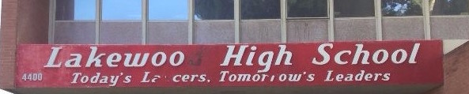

High School
The high school i would like to attend is lakewood or Richard D. Browning High School. Lakewood is my homeschool and is where my sister goes and most of my friends will go. Richard D. Browning High School is a school that revolves around culinary work. Richard D. Browning is the high school my mom and my aunt wants me to go to. If i were to attend lakewood i would be in the odyssey which is marine biology, or HOSM which is health occupations and sports medicine.
